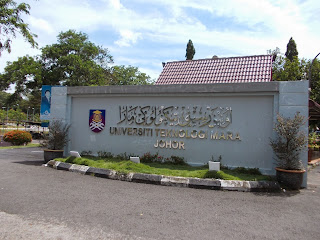
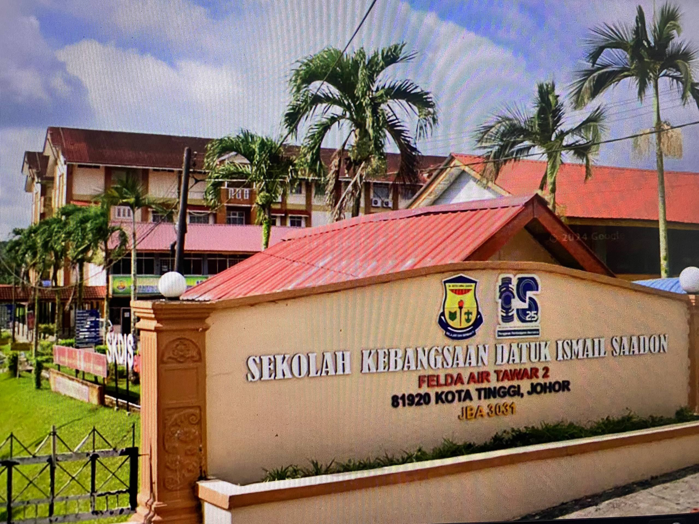
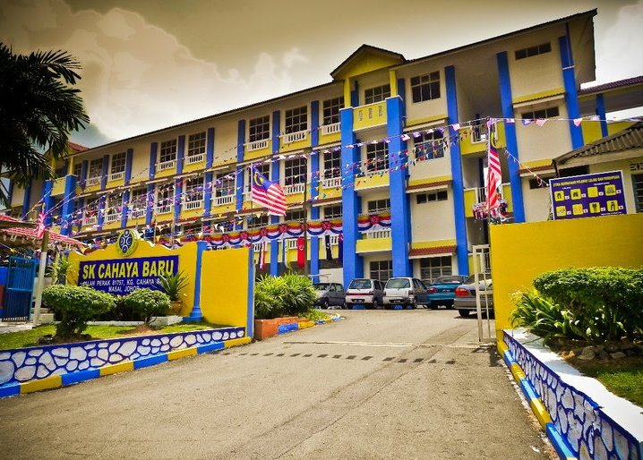

1. Universiti Teknologi MARA (UiTM), Segamat, Johor
Faculty of Information Science
Duration: 5 Semesters (2023 – 2026)
This programme focuses on records management, digital data handling, and information systems to prepare students for professional information services.
Sekolah Menengah Kebangsaan Laksamana
Form 1 – Form 5
Duration: 2018 – 2022
SPM Result: 4A 3B 1C
Completed secondary education with strong academic performance and active involvement in school activities.
3. Sekolah Kebangsaan Dato’ Ismail Saadon
Year 4 – Year 6
Duration: 2015 – 2017
Built a strong foundation in basic education and developed early interest in learning and teamwork.
4. Sekolah Kebangsaan Cahaya Bahru, Pasir Gudang
Year 1 – Year 3
Duration: 2012 – 2014
Early primary education that shaped basic academic skills and social development.
Tadika Nur
Duration: 2010 – 2011
Early childhood education focused on basic learning, creativity, and social interaction.